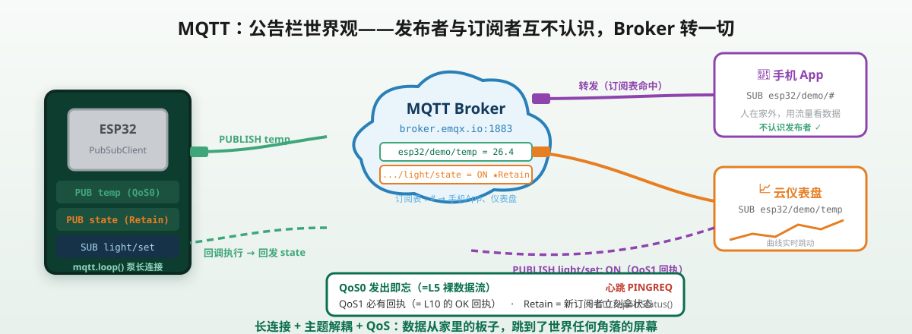

阶段四 · 无线物联 ｜ 难度：★★★★★ ｜ 预计用时：60 分钟
本课材料：ESP32 开发板 ×1、USB 线 ×1、面包板、LED（GPIO4 经 220Ω）×1、BMP280 或任意 I2C 传感器 ×1（复用第 8 课，可选）、2.4GHz Wi-Fi 无硬件替代：Wokwi 不联网——本课逻辑用"串口模拟 MQTT"跑通结构，真机按文档连云测试

你将做出：板子把温度数据发布到互联网上的 MQTT 服务器（broker）；你的手机开着流量、在楼下便利店，打开云平台网页就能看到温度曲线实时跳动——还能点一个按钮，让家里的灯亮起来。
第 11 课的网页控灯有个硬伤：你和板子必须在同一个局域网。这一课跨出门槛的最后一步：上云。板子发布（Publish）、云转发、手机订阅（Subscribe）——两端甚至不需要知道对方存在，这就是物联网的标准姿势。
本课学习目标（完成后你将拥有）：
PubSubClient 连接公共 MQTT 服务器，完成发布 + 订阅 + 收发双向先把第 11 课和本课的世界观摆在一起：
HTTP（第 11 课）： MQTT（本课）：
手机 ──GET /led──→ 板子 发布者 ──主题:温度/26.4──→ [Broker 云]
手机 ←─200 HTML── 板子 订阅者 ←──同一主题───────┘
（我问你答，连接即断） （我不认识你，broker 替我转发）
| HTTP（L11） | MQTT（本课） | |
|---|---|---|
| 模式 | 请求-响应（一问一答） | 发布-订阅（广播+筛选） |
| 连接 | 每次请求新建、答完即断 | 长连接（建一次，永久在线） |
| 方向 | 客户端主动问 | 任何一方都可发、都可收 |
| 找谁 | 必须知道对方 IP | 只认主题，不认人 |
| 开销 | 每次带完整 HTTP 头 | 最小 2 字节报头（为弱网设计） |
| 典型用途 | 网页、API | 物联网传感器、远程控制 |
💡 一句话记住 MQTT：它是物联网的"公告栏"——谁都可以往某个栏目贴条子（发布），谁订阅了这个栏目就能收到（订阅）。贴条的人和看条的人互不认识，公告栏（Broker）负责一切。
为什么物联网都爱 MQTT？ ①报头极小（省流量省电）②长连接 + QoS（消息不丢）③主题天然适合"一个工厂几百个传感器"的广播场景。第 5 课的 UART、第 7 课的 I2C 解决"线怎么连"，MQTT 解决"数据怎么到世界另一端"——协议栈的最后一块拼图。
主题是用 / 分隔的层级字符串，像文件路径：
factory/line3/temp ← 3 号线温度
factory/line3/humidity ← 3 号线湿度
factory/line1/temp ← 1 号线温度（换个数字就换个对象）
home/livingroom/light/set ← 客厅灯的控制命令
home/livingroom/light/state ← 客厅灯的状态回报
三条设计规则（背下来，这是 Topic 设计的全部心法）：
区域/设备/属性/动作——让订阅者能"按前缀订阅"。.../state（板子发布，只读）和 .../set（人发布，板子订阅）——避免控制与回报串线（第 10 课"消息协议白名单"的云版本）。factory/+/temp —— + 匹配一层任意值（所有生产线的温度）factory/# —— # 匹配剩余所有层（整厂数据全要）"发布者不知道谁在听"的威力：板子只管往 home/lab/temp 发；今天订阅它的是你的手机，明天可以是服务器、是另一个人的屏幕——板子代码一个字都不用改。这就是解耦。
MQTT 给了三种服务质量（QoS, Quality of Service），专门对付"无线链路会断"这个老敌人：
| QoS | 名字 | 含义 | 对应你学过的 |
|---|---|---|---|
| 0 | 最多一次 | 发出即忘，丢了就丢了 | 第 5 课 UART 裸数据流 |
| 1 | 至少一次 | broker 必须回 ACK，没收到就重发 | 第 10 课 OK 回执 |
| 2 | 恰好一次 | 四次握手，绝不重复绝不丢失 | 银行转账级 |
QoS 1 就是第 10 课"回执协议"的标准化版本——你当初自己写的 OK ON，MQTT 帮你做成了协议规范（而且内置了重发机制）。"通信必须有确认"这条线，从第 10 课一路贯到云端。
保留消息（Retain）：broker 会替你记住每个主题的最后一条。新订阅者一连上，立刻收到最近一次的状态，不用等下一次发布——
这解决了"新客户端打开 App 或断线重连后不知道当前状态"的问题：用 Retain 发布
home/lab/light/state = ON，任何时刻、任何新客户端连上都知道灯是亮的。（注：如果 ESP32 本身断电重启且未用 NVS 存状态，ledOn会随物理灯一起复位为OFF并上报新状态，远端显示依然与真实硬件一致。）
心跳（Keep Alive）：MQTT 连接要定期发 PINGREQ（默认 60s）——broker 60 秒没听到就宣布你死了。这就是第 10 课 reportStatus() 心跳的协议化：让对端知道"我还活着"。
零新接线：LED=GPIO4（220Ω）、按钮=GPIO23（INPUT_PULLUP），传感器沿用第 8 课（可选）。本课的战场在"网络那一头"。
MQTT 服务器（broker）三选一：
broker.emqx.io（EMQX 官方公共节点，端口 1883）📌 第 6 课规则再确认：本课开 Wi-Fi——若读传感器，模拟量只用 ADC1（32–39）；I2C 传感器（21/22）不受影响。
// ============================================
// 第 12 课：MQTT 发布/订阅 —— 数据上云
// ============================================
#include <WiFi.h>
#include <PubSubClient.h> // 库管理器安装 PubSubClient（by Nick O'Leary）
const char* SSID = "你的WiFi名";
const char* PASS = "你的WiFi密码";
const char* MQTT_SERVER = "broker.emqx.io";
const int MQTT_PORT = 1883;
const char* TOPIC_STATE = "esp32/demo/light/state"; // 建议把 demo 改成你的专属代号，防公共节点撞车
const char* TOPIC_SET = "esp32/demo/light/set"; // 我订阅：命令
const char* TOPIC_TEMP = "esp32/demo/temp"; // 我发布：传感器数据
const int LED_PIN = 4;
const int BTN_PIN = 23;
WiFiClient espClient;
PubSubClient mqtt(espClient);
bool ledOn = false;
unsigned long lastPublish = 0;
unsigned long lastMqttRetry = 0;
unsigned long lastWifiRetry = 0;
int lastRaw = HIGH, stableState = HIGH;
unsigned long lastChange = 0;
const unsigned long DEBOUNCE_MS = 25;
// —— 收到消息的回调：broker 转发来的数据从这里进 ——
void onMqttMessage(char* topic, byte* payload, unsigned int length) {
String msg;
for (unsigned int i = 0; i < length; i++) msg += (char)payload[i];
msg.trim();
Serial.print("收到 ["); Serial.print(topic); Serial.print("]: ");
Serial.println(msg);
// —— 白名单校验（第 10 课协议习惯，云上照样要）——
if (String(topic) == TOPIC_SET) {
if (msg == "ON") ledOn = true;
else if (msg == "OFF") ledOn = false;
else { Serial.println("未知命令，忽略"); return; }
digitalWrite(LED_PIN, ledOn ? HIGH : LOW);
// 执行后发布状态（Retain=true，新订阅者立刻知道）
mqtt.publish(TOPIC_STATE, ledOn ? "ON" : "OFF", true);
}
}
void connectMqtt() {
if (WiFi.status() != WL_CONNECTED) return; // Wi-Fi 没通前不白费力气
if (mqtt.connected()) return;
if (millis() - lastMqttRetry < 5000) return; // 5 秒重试节奏（millis 第 4 次立功）
lastMqttRetry = millis();
Serial.print("连接 MQTT broker...");
// clientId 要唯一：否则两台设备会互相顶掉连接
String clientId = "ESP32-" + String(random(0xffff), HEX);
if (mqtt.connect(clientId.c_str())) {
Serial.println("成功！");
mqtt.subscribe(TOPIC_SET); // 订阅命令主题
mqtt.publish(TOPIC_STATE, ledOn ? "ON" : "OFF", true); // 上线先报状态
} else {
Serial.print("失败，rc=");
Serial.print(mqtt.state()); // -4~5 各有含义，见报错表
Serial.println("，5 秒后重试");
}
}
void setup() {
pinMode(LED_PIN, OUTPUT);
pinMode(BTN_PIN, INPUT_PULLUP);
Serial.begin(115200);
WiFi.begin(SSID, PASS);
while (WiFi.status() != WL_CONNECTED) { delay(500); Serial.print("."); }
Serial.print("\nWi-Fi OK, IP: "); Serial.println(WiFi.localIP());
mqtt.setServer(MQTT_SERVER, MQTT_PORT);
mqtt.setCallback(onMqttMessage); // 注册回调：所有订阅消息走这
}
void pollButton() {
int raw = digitalRead(BTN_PIN);
if (raw != lastRaw) {
lastRaw = raw;
lastChange = millis();
}
if (millis() - lastChange >= DEBOUNCE_MS && raw != stableState) {
stableState = raw;
if (stableState == LOW) {
ledOn = !ledOn;
digitalWrite(LED_PIN, ledOn ? HIGH : LOW);
mqtt.publish(TOPIC_STATE, ledOn ? "ON" : "OFF", true);
Serial.println(ledOn ? "BTN -> ON (已同步云端)" : "BTN -> OFF (已同步云端)");
}
}
}
void loop() {
// —— Wi-Fi 保活（独立计时器，避免与 MQTT 5 秒重试互相清零）——
if (WiFi.status() != WL_CONNECTED && millis() - lastWifiRetry >= 10000) {
lastWifiRetry = millis();
Serial.println("Wi-Fi 断线，尝试重连...");
WiFi.disconnect();
WiFi.begin(SSID, PASS);
}
connectMqtt(); // ① 保持 MQTT 在线（断了按节奏重连）
mqtt.loop(); // ② 泵动长连接：收消息、发心跳（PINGREQ）——非阻塞
// —— 每 5 秒发布一次传感器数据（QoS0 够用：下一个 5 秒又来了）——
if (millis() - lastPublish >= 5000) {
lastPublish = millis();
float temp = 20.0 + random(0, 150) / 10.0; // 演示值；真机用 bmp.readTemperature()
char buf[16];
dtostrf(temp, 4, 1, buf); // 浮点 → 字符串
mqtt.publish(TOPIC_TEMP, buf);
Serial.print("已发布温度: "); Serial.println(buf);
}
pollButton(); // ③ 按钮（第 10 课）
}
PubSubClient mqtt(espClient); + mqtt.setServer(...) + mqtt.setCallback(...)
三件套：传给谁（WiFiClient）、连哪里（broker）、收到消息找谁（回调）。PubSubClient 是 Arduino 生态最常用的 MQTT 库，几百字节 RAM 就能跑。
onMqttMessage(topic, payload, length)——回调函数
你不需要"轮询有没有消息"——broker 转发来的瞬间，库自动调用这个函数（和第 7 课中断思想类似：到点被叫醒）。topic 告诉你"这是哪个栏目"，payload 是内容。注意 payload 是 byte* 要逐字节转 String——又见第 5 课"从线路上读到的永远要清洗"。
白名单校验 + 执行后回发状态
第 10 课的消息协议原样搬上云：只认 ON/OFF，执行后往 .../state 发布 Retain 状态——控制与状态分主题（新知识一规则 2），任何订阅 state 的客户端都会自动更新。
mqtt.connect(clientId) 的 clientId 必须唯一
公共 broker 上同名 clientId 会互相顶掉（后来者踢掉先来者）——random 后缀解决。这是"多设备上云"的第一坑，自建 broker 也一样。
mqtt.publish(..., true) 的第三个参数 = Retain
true 让 broker 记住最后一条——第 11 课"重启状态丢失"问题的官方解法（对照挑战 5）。
mqtt.loop()——长连接的泵
这行是 MQTT 的心脏：它负责收包、发 PINGREQ 心跳、处理重连事件。每圈 loop 必须调用（非阻塞），就像 server.handleClient()（第 11 课）之于 WebServer。三个"loop 里的泵"——handleClient、mqtt.loop、蓝牙 available——骨架完全同构。
connectMqtt() 里的 5 秒节奏
第 11 课 maintainWiFi 的翻版：断线重连必须有节奏，不能疯狂重试（公共 broker 会限流封你）。millis 节奏管理，本系列第 4 次立功。
QoS 的选择：publish() 默认 QoS0——温度数据 5 秒一发，丢一条无所谓（下一秒又来了），所以 QoS0 合理；状态/命令用 QoS1（回执重发）。按数据的重要性选 QoS，不是越高越好（QoS2 开销大且库通常只支持到 1）。
注意 Retain 按钮：新客户端一订阅 light/state，立刻收到最近一次的状态——不用等板子下次发布。这就是第 11 课"重启状态丢失"的官方解法。
上图是完整链路：板子发布 temp → broker 手一挥 → 手机/仪表盘/另一块板全部收到；手机发布 light/set: ON → broker 转发 → 板子回调执行 → 回发 light/state（Retain）。点按钮切换"发布者"视角，观察订阅者如何与发布者互不相识。
PubSubClient；Wi-Fi 连接成功，串口有 IP连接 MQTT broker...成功！esp32/demo/#esp32/demo/light/set 内容 ON → 板上灯亮 + 手机收到 light/state: ONOFF → 灯灭；发布 XYZ → 串口"未知命令，忽略"（白名单生效）light/state（不用等板子下次操作）light/state 同步刷新；板子断电重启 → 云端 light/state 自动更新为复位后的 OFF全部打勾 → 你的设备已经接入真正的互联网，完成了"物联网"的最后一跳。进入进阶篇。
bmp.readTemperature() 接进来，替换演示值——从"假数据"到"真数据"，曲线才有意义。publish(TOPIC_STATE,...,true)——本地与远程状态永远同步，这就是"数字孪生"的最小区间。esp32/demo/+（只一层）和 esp32/#（全部），分别看收到什么——亲手验证 + 与 # 的区别。MQTT_SERVER 改电脑局域网 IP——排错时先自建，再上公共云（工程排错顺序）。mqtt.state() 的返回码（见报错表）——这是"无线链路不可靠"的第三份证据（前两份：L10 蓝牙、L11 Wi-Fi）。| 现象 / 报错关键词 | 原因 | 解决办法 |
|---|---|---|
连接 MQTT broker...失败，rc=-4 |
连接超时（网络不通/服务器挂） | 查 Wi-Fi；换 broker.emqx.io 或自建试 |
rc=-3 / -2 |
连接被拒 / 协议错误 | 端口不是 1883（加密是 8883）；服务器地址错 |
rc=5 |
认证失败 | 公共 broker 不用密码；自建检查 username/password |
| 连上又立刻断，两台设备互踢 | clientId 撞车 | clientId 加 random/芯片 MAC 后缀（本课已做） |
| 能发布但收不到订阅 | ① 忘了 mqtt.subscribe ② 主题拼错（大小写敏感）③ 没调 mqtt.loop() |
三处逐一核对；Topic 全程复制粘贴别手打 |
| 手机收不到历史状态 | 没开 Retain | publish(..., true) 第三参数 |
| 收到乱码/问号 | payload 没按字节转 String / UTF-8 拼接错 | 用本课回调的逐字节循环写法 |
| 温度不发布、串口也没节奏 | loop 里卡了（delay）或 lastPublish 溢出 |
全文搜 delay(；时间差用减法（L3 的肌肉记忆） |
| 公共 broker 用不了/限流 | 公共节点有并发与频率限制 | 降发布频率；或自建/上云 |
PubSubClient 编译报错 |
库没装或版本旧 | 库管理器搜 PubSubClient 装最新 |
| 数据上去了但仪表盘空白 | 平台主题格式与板子不一致 | 对照平台要求的主题模板改 TOPIC_*（字符串完全一致） |
云上跑通了，但你用的还是 Arduino IDE + 一个 .ino 文件——当项目涨到几千行、要分文件、要团队协作、要自动测试时，它就撑不住了。第 13 课（进阶篇开篇）：PlatformIO 工程化——兑现第 1 课"PlatformIO 在第 12 课之后的进阶篇介绍"的承诺：标准工程目录、platformio.ini 一键编译、库版本锁定、跨平台（Windows/macOS/Linux 一致）、串口绘图器与单元测试。从"写草稿"升级到"做工程"。
本课程系列：从点亮一盏灯，到设计一台会自己思考的机器。